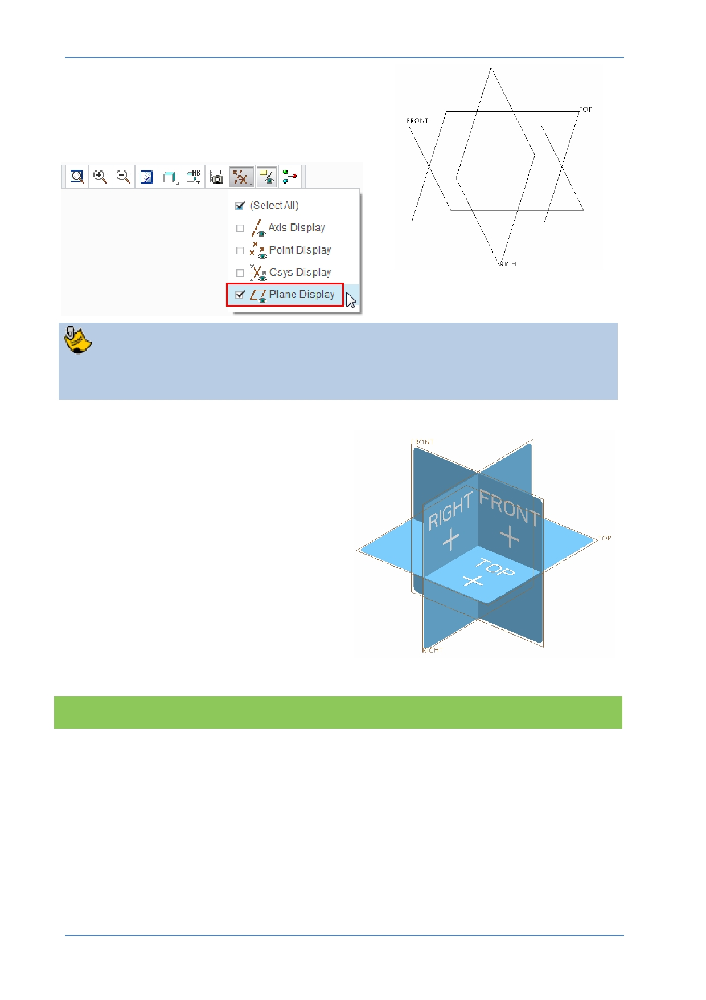

PTC Academic Program
4. Changing the display of datum features:
In the Graphics toolbar at the top of the
graphics area, disable the display of all
datum features except datum planes.
The datum planes FRONT, RIGHT and TOP represent the 3D work space or
framework for your model.
Think of datum planes as the framework
your model will be built on.
Datum planes have a front or positive
surface and back or negative surface.
The frame showing the placement of each
datum plane is colored brown when viewed
from the front (positive side) and gray when
viewed from the rear (negative) side.
What have you learned?
Setting working directories and starting new parts.
Controlling the display of datum features
Datum plane theory
© 2012 PTC
Creo Parametric 2.0 Primer
Page 14